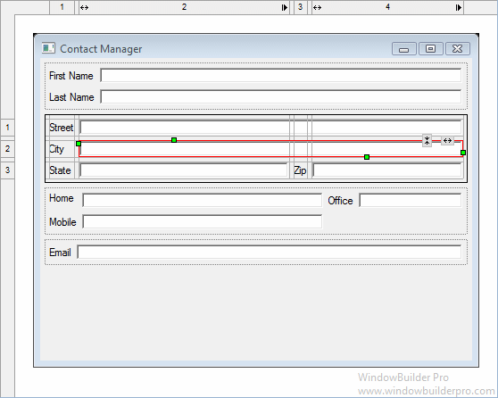
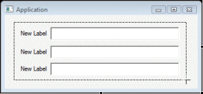
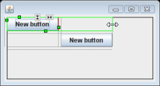

The Design View is your virtual sketchpad. You can add or remove components, edit layout properties, direct edit labels, and see what your overall design looks like as it evolves.

Select a component in the Design View to make it appear in the Property Pane, where you can edit its properties. This will also activate selection handles for the component. Selection handles allow you change layout properties of the selected control and, for some layout managers, also layout properties of sibling controls. All properties that can be changed in the Design View can be also changed in the Property Pane. Depending on the layout manager in effect, row and column headers may be visible in the header area.
Right-click on component to access the same context menu available in the Component Tree. Components may added by choosing them from the Palette and deleted using the Delete key.
Component Selection
Use the Selection tool in the Palette to select one or more widgets. Hold the Shift or Ctrl key down to select multiple widgets.

Use the Marquee tool in the Palette to rubber band select multiple widgets. Hold the Alt key and start dragging to automatically activate the Marquee tool.

Direct Edit
There is a quick way to edit the text property of buttons (including check and radio buttons), labels, text fields, groups, and table columns. First select a component in the Design View, and then hit the Space key to reveal an edit box in which you can set the component's text property.

Moving Components
Whenever a component is moved in the Design View, drag feedback is provided that is layout manager specific. In an x,y oriented layout like absolute layout, the live component is shown moving with a tooltip showing its current location. Dynamic snap / alignment points are provided to make it convenient to align the component with other components or the window margin.

In grid oriented layouts different feedback is shown depending on which cell the cursor is over. If the cursor is positioned over an open cell, the cell is highlighted in green and the cursor shows a green check mark. If the cursor is positioned over a row or column border, the row or column border is highlighted in yellow indicating that a new row or column will be inserted. If the cursor is positioned over an already populated cell, that cell is highlighted in red and the cursor shows a red minus sign.


Resizing Components
Whenever a component is resized in the Design View, size feedback is provided that is layout manager specific. In an x,y oriented layout like absolute layout, an outline of the new size is shown with a tooltip showing its current size. Dynamic snap / alignment points are provided to make it convenient to align the component with other components or the window margin. Resizing a component also snaps to the preferred size of the resized component or to the size (vertical or horizontal) of any other component on the same parent.

In grid oriented layouts, resizing a component will cause it to span more than one rows or columns. During the resize operation, the cells that will be occupied by the component are outlined in green.
